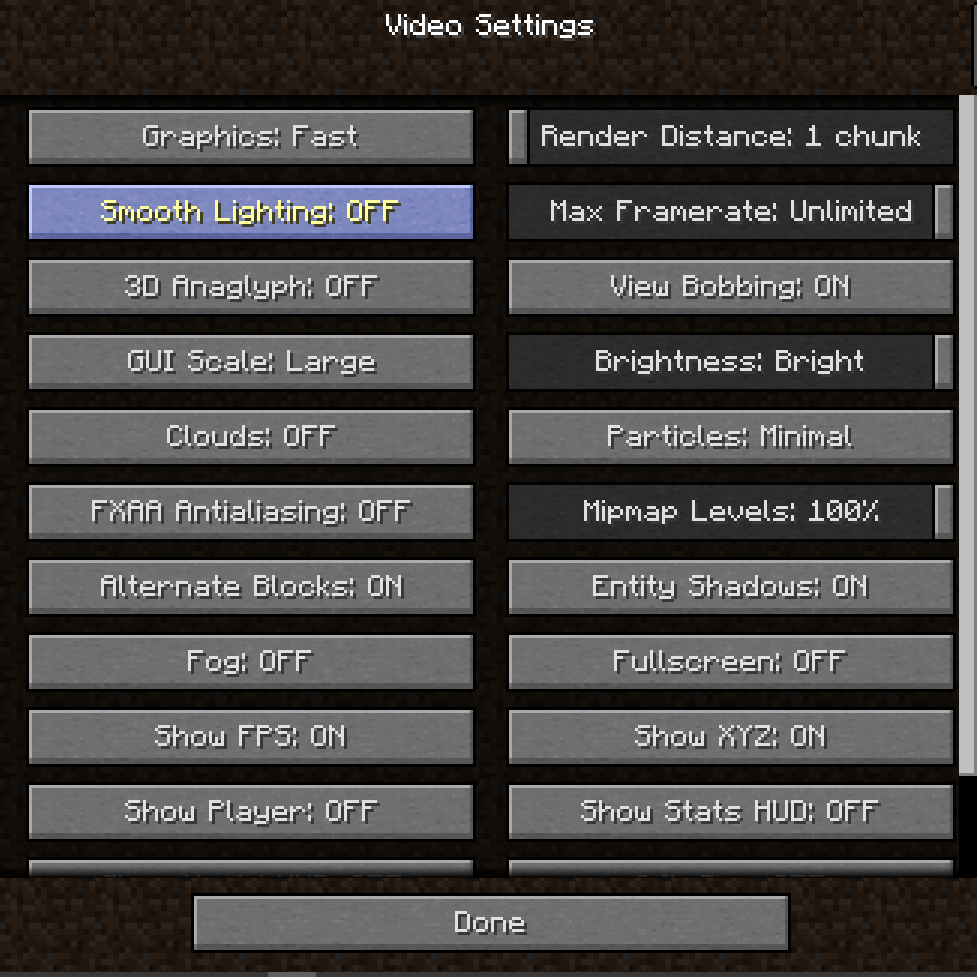

Press the ` key on your keyboard, then click Options, then Video Settings.
change your settings to these:
Render Distance, Max Framerate, FXAA Antialiasing, and Fog are the most important. DO NOT SET YOUR RENDER DISTANCE TO ANYTHING HIGHER THAN 2.

refer back to this guide if your game starts lagging again, they should only be reset if you have to retype your username when opening the site.
Reveal Text
These computers have incredibly bad CPU's, 2 gigabytes of ram, and quite literally no GPU. It's quite honestly a miracle that Minecraft, even this old of a version and this heavily optimised runs at all.
Cutting down the render distance to 1 GREATLY increases performance due to how awful the chromebooks specs are, as rendering chunks is usually a task handled by the GPU (which we don't have).
The same thing applies to Fog and FXAA Antialiasing, as these are also very reliant on the GPU. Fog is kind of like a shader, disabling also increases visibility. FXAA Antialiasing is a GPU intensive Antialiasing method.
Setting Max Framerate to unlimited is just a weird quirk of vanilla Minecraft that made its way over into this port, where disabling the maximum framerate gives you a higher framerate.
Finally, reasons your settings may reset is either due to you playing the game on a different computer, you clearing your browsers cookies/cache, or I had to migrate the server to a new website.
Anyways, if you actually read that all good job, and even better job if you understood it. Have a great day